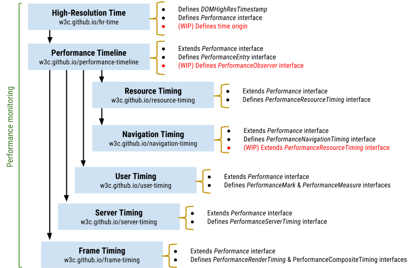

This document describes the basic concepts of a various set of Web Performance Timeline related specifications, including [[PERFORMANCE-TIMELINE-2]], [[HR-TIME-2]], [[NAVIGATION-TIMING-2]], [[RESOURCE-TIMING]], [[USER-TIMING]], [[SERVER-TIMING]], and provide a clear idea how these APIs fit together.
This document is a collaboration of the W3C Web Performance Working Group. Most use cases in this document are originated from the working group's past discussion achieved in their mailing list.
Overview
Image you're visiting the W3C website, if the web content doesn't show up in the screeen within a certain seconds, as users, you might just close the tab and head to alternatives, but as developers, you might wish to trace the hints in the requests and timing details so that you can find out what's slowing down the webpage.
Luckily, most browser vendors are willing to expose these performance characteristics via a set of performance APIs. With these convenient features, developers can better identify the bottlenecks of the web applications and serve the faster web applications.
A Waterfall Chart for w3.org
Resource Timing
Fig.1 uses a waterfall chart to illustrate the detailed network timing data for each loaded resource, with the Resource Timing API.
Resource Timing attributes
Load Times for Resources
Web Applications are mostly consist by a set of downloadable resources. By resource, we usually mean the HTML elements, the XHR objects, and link with the link type of stylesheet or SVG elements.
The Resources timing data are exposed as methods on the global window.performance object we are going to talk about in the next section. You're encourage to use performance.getEntriesByType("resource") method to obtain an array of Resource Timing Objects for each requested resource.
Demo of Resource Timing Details
Here, the PerformanceResourceTiming interface extends the PerformanceEntry interface in the Performance Timeline. The duration attribute in Resource Timing can by measured as the difference between responseEnd and startTime.
As indicated in Fig.2 and Fig.3, you are able to access a set of critical network timing information for each resource on the page:
If there are HTTP redirects or equivalent when fetching the resource and if all the redirects or equivalent are from the same origin as the current document.
The time immediately before the user agent starts requesting the resource from the server, or from relevant application caches or from local resources.
Each of these time stamp is in microseconds, as defined by the window.performance.now() method in theHigh ResolutionTime specification.
Example
As an example, let try to measure the time it takes to fetch the icon on the W3C homepage.
<!doctype html><html><head></head><bodyonload="loadResources()"><script>function loadResources(){var image1 =newImage();
image1.onload = resourceTiming;
image1.src ='http://www.w3.org/Icons/w3c_main.png';}function resourceTiming(){var resourceList = window.performance.getEntriesByType("resource");for(i =0; i < resourceList.length; i++){if(resourceList[i].initiatorType =="img"){
alert("End to end resource fetch: "+ resourceList[i].responseEnd - resourceList[i].startTime);}}}</script><imgid="image0"src="http://www.w3.org/Icons/w3c_home.png"></body></html>
Performance Timeline
Overview
As Navigation Timing, Resource Timing, and User Timing were gradually taking shape, the group decided to unified interface for these various timing specification that were basically doing the same thing with their own separate interfaces.
This specification defines the necessary Performance Timeline primitives that enable web developers to access, instrument, and retrieve various performance metrics from the full lifecycle of a web application.
A developer can obtain performance metrics related to the navigation of the document, resources on the page, and developer scripts via the the Performance Timeline:
The Performance TimeLine introduces PerformanceEntry.entryType to describes the type of the interface represented by this PerformanceEntry object, which represents performance measurements.
var entryType = performance.getEntries()[0].entryType
// Entry Type
Each of PerformanceEntry objects expose the following inherited attributes:
name
A DOMString identifier for this PerformanceEntry object. Not necessarily unique.
entryType
The DOMString that describes the type of the interface represented by this PerformanceEntry object.
startTime
A DOMHighResTimeStamp that contains the time value of the first recorded timestamp of this performance metric..
duration
A DOMHighResTimeStamp that contains the time value of the duration of the entire event being recorded by this PerformanceEntry.
The W3C WebPerf WG maintains a list of the known values for PerformanceEntry.entryType.
Resource and user timings has been useful by provide performance data, but in some occations it's tricky to make use of this data if there's no notification when new performance entries have been recorded.
In Performace Timeline Level 2, the PerformanceObserver interface is introduced to allow subscribing to / observing new performance events delivered into the Performance Timeline.
var observer = new PerformanceObserver(function(list) {
list.getEntries().map(entry => {
var pre = document.createElement('pre')
pre.innerText = JSON.stringify(obj(entry), null, '\t');
document.getElementById('observe').appendChild(pre);
})
});
// Register for User and Resource Timing events
observer.observe({entryTypes: ['resource', 'mark', 'measure']});
performance.mark('registered-observer');
// Log document state changes to performance timeline
document.onreadystatechange = function () {
performance.mark("dom-"+document.readyState);
}
High-Resolution Time
Introduction
High Resolution Time (L2) spec defines an API that provides the current time in sub-millisecond resolution and such that it is not subject to system clock skew or adjustments.
Monotonic Clock
In early stages of design, our Timing APIs were defined in terms of wall-clock epoch times. Unfortunately, such times on modern computer system have an unpleasant property: they are not monotonically increasing at the rate time actually passes at. In particular, NTP adjustments, leap seconds, user configuration changes, and so forth can cause the epoch time reported by the system to go backwards, go forwards to fast or go forwards too slowly.
For example, a positive number, negative number, or zero may be logged in between the two calls to Date.now().
var mark_start = Date.now();
doTask(); // Some task
if (window.console) window.console.log('Duration of task: ' + (Date.now() - mark_start));
The idea of High Resolution Time is to provides a monotonic, uniformly increasing timestamp suitable for interval measurements, which is made possible based on the following rules:
The time values returned when calling the now method on Performance objects with the same time origin MUST be monotonically increasing and not subject to system clock adjustments or system clock skew.
The difference between any two chronologically recorded time values returned from thenow method MUST never be negative if the two time values have the same time origin.
translateTime MUST be used to compare two chronologically recorded time values of different time origin.
Sub-millisecond Resolution
Date.now() [[ECMA-262]] is genuinely useful in determining the current value of the calendar time and has a long history of usage. However, looking longer term, there's a need for more precision.
One example is graphics. When calculating the frame rate of a script based animation, developers will need sub-millisecond resolution in order to determine if an animation is drawing at 60 FPS. Without sub-millisecond resolution, a developer can only determine if an animation is drawing at 58.8 FPS or 62.5 FPS.
The DOMHighResTimeStamp type and the now method of the Performance interface resolve the issues summarized in this section by providing a time value in sub-millisecond resolution.
Time Origin
Time Origin determines the time value from which time is measured. For a dedicated worker or a document the origin time is the start of page navigation of that document, and for a shared worker the origin time is when the shared worker is created. For a more accurate defination, please check the spec detail.
Suppose we have a shared worker A that was created 10ms after the start of navigation of the parent document. If we call performance.now() 5ms after the shared worker A was created in both the worker and the parent context, we should see the following values:
Shared worker A:
performance.now(): 5.000 ms
Parent context:
performance.now(): 15.000 ms
To display such events on the same timeline, the application can translate the DOMHighResTimeStamps from the worker with the translateTime method.
// ---- worker.js -----------------------------// Shared worker script
onconnect =function(e){var port = e.ports[0];
port.onmessage =function(e){// Time execution in workervar task_start = performance.now();
result = runSomeWorkerTask();var task_end = performance.now();
port.postMessage({'task':'Some worker task','start_time': task_start,'end_time': task_end,'result': result
});}}// ---- application.js ------------------------// Timing tasks in the documentvar task_start = performance.now();
result = runSomeWorkerTask();var task_end = performance.now();
plotEventOnTimeline({'task':'Some document task','start_time': task_start,'end_time': task_end,'result': result
});// Translating worker timestamps into document's time originvar worker =newSharedWorker('worker.js');
worker.port.onmessage =function(event){var msg =event.data;// translate timestamps into document's time origin
msg.start_time = performance.translateTime(msg.start_time, worker);
msg.end_time = performance.translateTime(msg.end_time, worker);// plot the results on document's timeline
plotEventOnTimeline(msg);}
Adding originTime to the performance.now(), gives us a time value that is comparable in either context. Now we would get something like so:
Shared worker A:
performance.now(): 5.000 ms
performance.originTime: 110.000 ms
performance.originTime + performance.now(): 115.000 ms
Parent context:
performance.now(): 15.000 ms
performance.originTime: 100.000 ms
performance.originTime + performance.now(): 115.000 ms
Navigation Timing
Now that we know how to get timing metrics for individual resources, let's go a step further to access the complete timing information for navigation of a document.
Navigation Timing and Resource Timing
Navigation is about how the user agents convert the requested HTML, CSS, and JavaScript into rendered pixels, which is one of the most critical steps for users to navigate a document. Navigation Timing API is the start point of the Web Performance APIs, so when the Performance Timeline APIs was created in 2011, the original design of Navigation Timing has been widely implemented and too late to align it with the Performance Timeline.
In [[NAVIGATION-TIMING]], by accessing window.performance.navigation, you will get an instance of PerformanceNavigationTiming which provides timing-related information about the page’s performance. This doesn't fit in the goal to offer a unified entry by performance.getEntries.
Now that we got the opportunity to fix this historical bug in Level 2. The ideal design for Navigation Timing is to participate in the Performance Timeline API. Also, it extends initiatorType and workerStart from the PerformanceResourceTiming interface.
The PerformanceNavigationTiming attributes
Navigation Timing Attrbutes
User Timing
Flexible Measurement
So far, with Navigation Timing and Resource Timing, you can sufficiently access the timing information of those critical moments in resource loading and page navigation, but, what if you want to figure out what's going wrong with a button-click interaction of your user? Is it possible to obtain the high precision performance characteristics of a individual task which is important to you?
User Timing, which is an extension to the Performance interface, can help you measure the performance of your applications by providing high precision timestamps.
Here's a general example that shows how a developer can use the interfaces defined in this document to obtain timing data related to developer scripts.
The PerformanceMark interface extends the Performance interface, and exposes marks to the users by a funtion named mark().
mark() allows web developers to make unique marks in their web application, and constomize the mark with a DOMString markName, f.ex. window.performance.mark('before_click');
Taking advatage of the Performance interface, it's pretty easy to access the marks you have storaged. By calling window.performance.getEntriesByType('mark'), you will get a list of all the marks in your application.
When a mark is no longer of any value, you can get rid of it by clearMarks('name'), or even clear all the marks with clearMarks().
performance.measure()
When you have prepeared enought marks, the PerformanceMeasure interface can help you figure out the elapsed time between two marks. This interface is also an extension to the Performance interface, which exposes measures created via the measure() method. Here, measure() stores the DOMHighResTimeStamp duration between two marks along with the associated name (a "measure"). For example, to measure a successive click, we can call window.performance.measure('measure_click', 'click_before', 'click_after');.
Similar to the PerformanceMark interface, you can get measures by simply calling window.performance.getEntriesByType('measure'), and use clearMeasures() method to delete measures.
Roadmap of Performance Monitoring
Current Plan
Most of these Web Performance Timing APIs are still work in process, Fig.5 is a the dependency graph that can explain our current plan of the Performance monitoring specs.

Web Performance Timing APIs Dependency Graph
Browser Support
Most of the Performance Timing APIs above have been landed in the major browsers. The Web Performance WG also provide a detail report(by October 21, 2015) for the latest features in its deliverables.